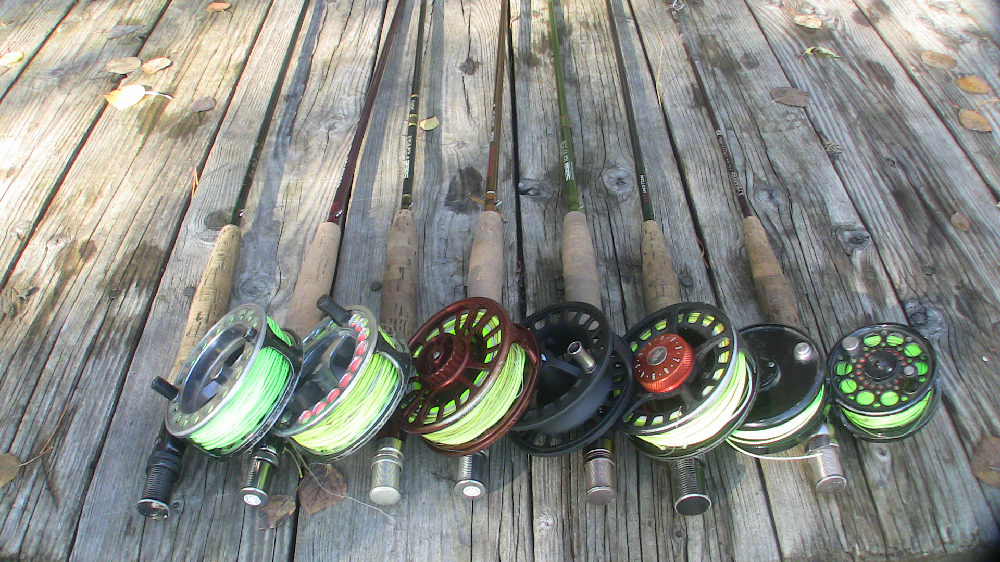

Get this image on: Freerange Stock
A fly rod is the tool you use to cast the line into the water and catch the fish, but it is more complex than spinner fishing.
You can find these expensive pieses at Cabelas, Bass Pro Shops, Orvis or any other fly shop/ sporting goods stores.
The origeon behined the fly rod began in the Middle Ages, when people noticed fish eating small bugs that were tough to keep on the hook as bait.
Early fly fishers didn't do much casting and didn't use a reel. Their methods were very similar to a Japanese method of fishing called tenkara,
which has become increasingly popular around the world.
People think that the cast in a fly rods use is in the arm but it is more in the wrist than anything else.
The reason for the wrist is when final acceleration is achieved with the wrist as opposed to the arm,
ceasing that movement abruptly—as must happen for an efficient cast—is much easier. this is why the wrist is better than the arm.
Power, speed, and distance. Others may think taht these pieces of equipment is too expensive and they would be right.

Get this image on: Wikimedia Commons